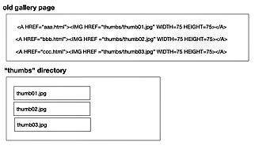
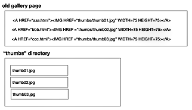

2025-10-18
Using CSS Sprites for Thumbnails
Several pages on multicians.org display picture galleries as a set of thumbnail images. Clicking on any thumbnail image opens a new page, or displays a pop-up window showing a larger picture. Implementing these gallery pages in a simple way makes them noticeably slow to load when there are many thumbnails. Constructing the pages to show the thumbnails as CSS sprite images from a combined file makes the pages load much faster. (Google penalizes pages that load slowly, ranking them lower in search results.)
Examples
Performance Considerations
Using sprites can prevent:
- Delays before a page shows anything.
- Delays before a page shows all its content.
- Page layout changing as images arrive.
Web browsers read and parse HTML files, and then lay out text and image items defined in the files. When an HTML item specifies a remote object, the browser sends an HTTP request to fetch an object from the network, and has to wait for the object's content to come back. The more separate HTTP requests a page makes, the longer the page takes to load.
If a page's HTML doesn't specify the dimensions of an image, the web browser has to request the object from the web server, wait for the image file to load, find out its width and length, and adjust the page layout. When a browser doesn't know the size of an image, it will continue parsing HTML and laying out page content, using a temporary image size of zero until the HTTP request finishes, and then update the layout when it learns image's dimensions: this may cause a displayed page to jump about as the browser learns new image size attributes. Specifying WIDTH and HEIGHT in each HTML IMG tag avoids layout shifts, and also avoids having to wait for an image to be loaded to find out its size.
Thumbnail Galleries on multicians.org
The site multicians.org uses thumbnails that occupy 75x75 CSS pixels on gallery pages. As described in High DPI Pictures, the site uses 150x150 image-pixel thumbnail images to ensure that the thumbnails will look sharp on high-dpi screens, such as smartphones and Retina displays. This "2x" sizing approach is also used for larger images such as the home page sliding images.
A user visiting a naively constructed gallery page, say with 401 thumbnail images, would see the page load slowly, because the user's browser has to request the page (1) and its stylesheet (2) and JavaScript (3), wait for the page's HTML, CSS, and JavaScript to come back (4), parse the HTML to find 401 IMG tags (5), and then (6-406) send each of 401 requests to the web server for the images, wait for each in order to find out the size, and then (407) position the page's elements and display them. If the image sizes are not specified in the IMG tags, then as images come back, the browser finds out the size of the image and re-computes the page layout and redisplays it, and the page display will jump around. If the image sizes are known ahead of time, the frame of the page displays, and then as each image arrives it is filled into the image's space.
Using CSS sprites sends HTML requests for the page (1) and its stylesheet (2) and JavaScript (3), parses the HTML, and lays out the whole page. The page from (1) contains 401 CSS definitions that specify little slices of a CSS sprite image specified as a background, and an HTML request is sent for the sprite image (4). Browsers don't wait for CSS background files to be loaded. When the background sprite image is loaded, the browser quickly fills in the background slices for each thumbnail image. This method requests one background sprite file instead of 401 images, and the whole page is fully visible much sooner, after only 4 round-trip requests, about 400 times as fast.
HTML Implementation
If a page has an IMG tag without WIDTH and HEIGHT specified, the visitor's browser must send an HTTP request to read the image, and wait for the response, before it can lay out the page. This is slow.
A way to speed up page display is to specify WIDTH and HEIGHT (in CSS pixels) on each IMG tag, so that browsers don't need to wait to read an image in and get its size to determine its effect on the layout of other elements. Doing this allows a browser to lay out the page and text elements quickly and display the non-image elements, and then send requests to fetch each graphic image, wait for the returned image, and insert the contents of the image into the display as each image arrives from the web server. (On a slow connection, this result is very noticeable: instead of a long pause before anything appears, the page's heading, text, and footers appear quickly, and then the graphics appear 5 or 6 at a time for those browsers, like Chrome and Firefox, that issue several requests in parallel and asynchronously process the returned values.)
An additional method to speed up page display is to display a transparent GIF image for each thumbnail, and specify the actual thumbnail image content as a CSS BACKGROUND property on the image. Browsers can then display non-image content right away, and not have to shift it around later when the background image request completes. If the background images each require a separate request, then the page will lay out quickly, with the spaces for each image blank, and then the images will be filled in a few at a time.
The time until a gallery page is fully displayed depends on how many round-trip image fetches are issued.
Using HTML Sprites
Modern browsers are very fast; a round-trip request from the user's browser to the site web server takes much more time than creating the laid-out page image in the browser. To make gallery pages load even faster, combine multiple thumbnail images into one or more combined graphic files and display each thumbnail image as a CSS sprite; that is, the HTML display for each image shows a transparent 1x1 GIF stretched to 150x150, with a separate CSS CLASS for each image that selects a background 150x150 image slice, or sprite, from the right place in the combined file. Loading one combined background file is much faster than loading many separate background images.
Gallery web pages constructed using sprites load faster. For a gallery page with 401 thumbnails, the browser loads the HTML and CSS definitions for each sprite (1), loads the 1x1 transparent GIF (which will be cached by the browser after the first time) (2), and fetches the packed files once (4): this performs 4 round-trip data requests to the server instead of 404. The visitor's browser can lay out and display the the page image as soon as it has the HTML, and then fill in the images when the packed file finishes loading: this is very fast.
The benefit depends on web visitors' impatience, the speed of their connections, and the speed of their PC. For a page with less than 20 images, it's probably not noticeable... unless visitors are loading a site over a satellite connection.
For a home page whose responsiveness is critical, or a page with lots of images, it is worth doing some experiments. To see how long it takes a page to load, you can use Google Chrome: choose View => Inspect Elements => Network and reload the page to see what elements are loaded and what takes the longest. Or you can select the Lighthouse tab and audit the page; Performance should be near 100.
For an example of a page where sprites are is used, see multics-images.html. Instead of loading 670 individual thumbnail JPG files, it fetches five large combined JPGs, which is much faster. (Notice that this page uses a fluid design that adjusts tne number of thumbnails in a row depending on the screen width: on a web browser, the page shows 11 images in a row: on a smartphone, it shows 4 per row.)
Maintaining Web Pages containing Galleries
Creating an HTML web page containing a galleriy like this was tedious and error prone for me. Making any change to such a page, like adding another image, was difficult to do without making mistakes.
I always say, "If it's worth doing at all, it's worth writing a tool to do it." So I did. I had written a simple open source tool called expandfile that compiles source in "HTMX" (HTML extended) to HTML. I wrote about 50 lines of HTMX that create packed CSS sprite files and generate the CSS definitions by expanding templates.
To generate a gallery page that uses sprites, the HTMX source for the page takes these steps:
- Find the list of thumbnails for each gallery section.
- Concatenate the thumbnails info a packed graphic file using ImageMagick
- Generate a CSS class for each thumbnail that points to the thumbnail image slice of the packed file as a BACKGROUND image. Add the CSS declarations to the HTML source being generated.
- Create IMG tags for each thumbnail specifying a 1x1 transparent GIF file clearpix.gif as the SRC attribute and specify the generated CSS class as the CLASS attribute for the image.
This code is driven by a list of the thumbnails for each gallery section. The list of images can be built into the page source, or kept in an SQL or CSV file. I use SQL and iterate over a table of images: my code executes an "iterator" macro for each image to generate the CSS class, and then generates a IMG tag for each image, referencing the CSS class.
The multicians.org build process is driven by SQL tables listing images. Pages with galleries generate the packed graphics when the HTML page is made from .htmx and .sql source, and use macros to create IMG tags that reference the packed file. See Using Unix tools with expandfile for more info.
To add a new image to a gallery, I create the thumbnail image as described below, using use a shell script, and then add a row to the SQL file with the thumbnail name, caption, and the link target page it will open when clicked. Then I issue the make command, which loads the SQL file into the database and runs expandfile to regenerate the HTML file for the gallery.
For other gallery pages, I use expandfile macros to create an IMG tag if clicking a thumbnail should display a large image. These gallery pages use JavaScript macros to generate a popup display for an individual single image, or for a mini gallery that displays a sequence of large images. These macros obtain the WIDTH and HEIGHT of each large image using a helper program, and generate HTML to display the image, so that the page displays quickly, uses High DPI versions of files if they are available and needed, and saves the page maintainer (me) from having to look up the image sizes by hand.
Using these macros, I can add new photos to the web site in a few minutes.
Graphics
Generating Thumbnails
To create a 2x thumbnail for an image, I wrote a shell script called gth2x
to generate a 150x150 thumbnail image from JPG, PNG, and GIF files
using the free toolkit  ImageMagick (available for Mac, Windows, and Linux).
ImageMagick (available for Mac, Windows, and Linux).
#!/bin/sh # square thumb 150x150 # requires ImageMagick tool magick # THVV 2011-04-07 # THVV 2016-06-07 add sharpen # THVV 2017-03-29 make 2x version # THVV 2025-10-18 order of args changed in ImageMagick v7 # Permission is hereby granted, free of charge, to any person obtaining # a copy of this software and associated documentation files (the # "Software"), to deal in the Software without restriction, including # without limitation the rights to use, copy, modify, merge, publish, # distribute, sublicense, and/or sell copies of the Software, and to # permit persons to whom the Software is furnished to do so, subject to # the following conditions: # The above copyright notice and this permission notice shall be included # in all copies or substantial portions of the Software. # THE SOFTWARE IS PROVIDED "AS IS", WITHOUT WARRANTY OF ANY KIND, # EXPRESS OR IMPLIED, INCLUDING BUT NOT LIMITED TO THE WARRANTIES OF # MERCHANTABILITY, FITNESS FOR A PARTICULAR PURPOSE AND NONINFRINGEMENT. # IN NO EVENT SHALL THE AUTHORS OR COPYRIGHT HOLDERS BE LIABLE FOR ANY # CLAIM, DAMAGES OR OTHER LIABILITY, WHETHER IN AN ACTION OF CONTRACT, # TORT OR OTHERWISE, ARISING FROM, OUT OF OR IN CONNECTION WITH THE # SOFTWARE OR THE USE OR OTHER DEALINGS IN THE SOFTWARE. f=$1 grav=$2 if test -z "$f" then echo "usage: gth2x filename [center|north|northeast|...]" exit 1 fi if test -z "$grav" then grav=center fi echo magick -thumbnail x300 -resize '300x<' -resize 50% -gravity $grav -crop 150x150+0+0 -sharpen 0x1.0 +repage $f thumb2-$f magick $f -thumbnail x300 -resize '300x<' -resize 50% -gravity $grav -crop 150x150+0+0 -sharpen 0x1.0 +repage thumb2-$f
Given the file name foo.jpg, this script runs ImageMagick's magick program to create a thumbnail thumb2-foo.jpg, which I then move into my thumbnails150 directory, and name it foo.jpg, the same as the full size graphic.
The script accepts an optional "gravity" argument to specify which part of a non-square input will be kept: "center" is the default, and "northwest" and other compass points can also be given. Usually I generate the default, and then if a thumbnail is really ugly, I try the script with other arguments. In extreme cases I generate a better thumbnail using an image editor to isolate the key details of a photo.
Generating Many Thumbnails
multicians.org uses a subdirectory called mulimg with full size photos, and another subdirectory called thumbnails150 containing the corresponding thumbnails, with the full size and thumbnail files named the same.
The Makefiles of other sites I maintain use a Perl program called genthumbs to scan an image directory and a thumbnails directory, and create any missing thumbnails, by invoking magick in a similar way to gth2x.
Concatenating Thumbnails
The sprite solution for thumbnails requires a combined JPG file of concatenated 150x150 images.
The ImageMagick tool magick provides a way to concatenate thumbnails. (It used to be called convert but there is a Windows program by that name, and people were confused.) The simplest way is to make an image with a height of 150 and a width of (150 * N) for N thumbnails. Addressing the individual images from CSS is then easy. Execute
magick x.jpg y.jpg z.jpg ... -append thumbspack.jpg
to create a combined image thumbspack.jpg from a list of individual sprite images.
The maximum dimension of a JPEG file is 65536 pixels in either dimension .. so this method will only work for up to 436 thumbnails if the sprite file is a linear concatenation of 150x150 sub-images. To go beyond this limit, I could make a 2-dimensional packed file with more complex addressing, or create multiple packed files. Either of these methods requires corresponding changes to the CSS sprite definitions. (To avoid the limit on JPEG size, multics-images.html divides its 650 images into 5 files, divided by topic; when the "People" category came near to exceeding this limit, I divided the section into 1960-2009 and 2010-onward packed files, by changing the template and the database that lists images.)
(The JPEG XL graphic format increases the 64K limit on file size to 1GB, and ImageMagick supports it, but the format is not yet supported on any browser except Safari as of Feb 2025, according to caniuse.com.)
HTML Code
IMG tags
An IMG tag that displays a particular sprite image in a gallery looks like
<img src="mulimg/clearpix.gif" width="75" height="75" alt="sprite" class="thumbspacksprite003">
The WIDTH and HEIGHT in the IMG tag are measured in CSS layout pixels (CSS standardizes this at 96 DPI). clearpix.gif is a 1x1 pixel transparent GIF file: it will be stretched to whatever dimensions are in WIDTH and HEIGHT. Since it is transparent, the background will show through it. The CLASS attribute specifies a particular class for the image to be shown, and is different for each image. The expandfile macros generate the CSS class definitions at the same time that they generate the combined thumbnail sprite graphics file.
Generating CSS sprite image definitions
The CSS class definitions go inside a STYLE tag in the HEAD section of the gallery web page. There will be one class definition for each image in the concatenated file. The CSS class definition for a particular sprite image, say the third one, looks like
.thumbspacksprite003 {
width: 75px;
height: 75px;
background: url(mulimg/thumbspack.jpg) no-repeat 0px -150px;
background-size: 75px;
}
The first element is the class name, which matches the CLASS attribute in an IMG tag. The WIDTH and HEIGHT attributes in the CSS definition are measured in CSS pixels. The relative URL of the packed JPG file is in the URL() value of the BACKGROUND attribute, which then positions the background by specifying the vertical and horizontal offset of the background (basically the background is shifted down and left, and then a 75x75 window for the sprite is applied.. this is why the offset is negative). The BACKGROUND-SIZE attribute is the width of the image in CSS pixels; I think it can be omitted since it is the same as WIDTH.
In this example, the image being displayed has twice as many image pixels as the CSS layout space it is shown in, in order to show sharp images on high DPI screens, as mentioned above.
(I used to arrange thumbnails with a TABLE element, but tables don't work well on small screens: visitors had to scroll horizontally. It is simpler to just write a sequence of IMG tags with the INLINE attribute, and let the browser decide at layout time how many to put on a row, depending on the screen width.)
HTMX code
Pages that display thumbnail galleries using sprites are generated by expandfile from .htmx source. A small local SQL database lists the images to be shown in the gallery and what to do when the thumbnail is clicked; the *sqlloop builtin iterates over such databases selecting images to display and expanding templates that generate HTML. The HTMX source file uses the *sqlloop builtin function to generate a temporary shell script that re-creates the packed thumbnail sprite images, noting the offset of the thumbnail. The loop also generates CSS definitions for each thumbnail, using the offset. The HTMX source inserts the generated CSS definitions in the HEAD of the page, and then executes the shell script with the *shell builtin function to generate the packed file of thumbnails. The source file later uses a second *sqlloop to generate the list of IMG tags that display thumbnails that pop up a full size image. With this arrangement, the gallery's HTMX file does not change when a new image is added to the SQL database: I just recompile.
If I change any element on a page with galleries, the macros regenerate all the CSS classes, all the IMG tags, and all combined sprite image files. This takes a few seconds and ensures that all the HTML and graphics elements match. When I test the page in a browser, I have to make the browser reload the page's graphics.
(Just to be clear, HTMX macro expansion, SQL queries, shell scripts.. all this tricky stuff is done on my development computer, before deploying compiled static HTML pages to the web server. The web server does nothing but find and send HTML pages on request, without any database accesses or content creation. When the HTML page reaches the user's browser, the browser lays out the page using CSS rules and displays it. On some multicians.org galleries, I set it up so a click on a thumbnail image will execute JavaScript to display a popup.
Another Example: Home Page Slider
The home page multicians.html displays a sliding panel of fifteen 600x488 pixel images (shown in a 300x244 CSS space), using JavaScript code based on the jQuery plugin "EasySlider." The purpose of this section is to attract visitors to site features past the home page.
I decided to use sprites for this display to make the site's home page load as fast as possible, to make sure Google didn't penalize the page. Instead of loading fifteen image pages I load one big combined page. (Chrome Lighthouse says the page is fully up in 0.5 seconds. After that, changing to a new sliding image does not contact the web server again.) Using sprites for the slider images was similar to the gallery page changes: I changed the IMG tag to show a 1x1 transparent GIF for each sprite and added a BACKGROUND CSS class, and to generate the packed JPG file and the CSS class definitions whenever the home page or the slider definitions change.
The HTML IMG tags, CSS definitions, and packed JPG file are generated by about 40 lines of expandfile code when the page is compiled by iterating over a little SQL database table on my computer, homeslider, with 15 rows that specify the picture file name, a text caption to be overlaid over the image with its color, style, and placement, a link target (another HTML page on the site), and a TITLE attribute. The overlay text can insert expandfile variables with values computed at page compilation time, so that an image can be captioned, e.g. "5015 Documents". Macros generate the HTML and corresponding CSS that are referenced by the JavaScript slider function. It's elegant: the JavaScript slider doesn't know about the sprites, and the sprites don't need to know about the slider code.


Here is the definition of the SQL table that generates the sliding images panel for multicians.org:
-- homeslider table -- Copyright (c) 2014-2022, Tom Van Vleck -- THVV 05/07/17 change images to 600x488 for retina. -- THVV 06/22/17 replace timeline images with hiDPI GIFs -- THVV 08/10/21 better captions -- ---------------- -- see multics.htmx for how this table is used. -- all images are 600x488px, to be shown in a 300x244 CSS pixel space -- DROP TABLE IF EXISTS homeslider; CREATE TABLE homeslider( ordinal FLOAT, -- order of items if more than one selected liclass VARCHAR(64), -- class for the LI cssclass VARCHAR(64), -- class for the picture -- bkhi=black,high rdmd=red,medium whmd=white,medium wholo=white,low bllo=black,low rdlo=red,low target VARCHAR(255), -- link target filename VARCHAR(255), -- picture file name oltitle VARCHAR(255), -- overlay title, may contain HTMX var description VARCHAR(255), -- TITLE attribute PRIMARY KEY(filename) ); INSERT INTO homeslider (ordinal, liclass, cssclass, target, filename, oltitle, description) VALUES (0.0,'','sc_whmd','multics-stories.html','slider-h6180-doors-open-2x.jpg','%[nstories]% Multics Stories','CISL H6180 Multics computer, Dec 1973 [THVV]'), (0.5,' class="starthidden"','sc_bkhi','corby.html','slider-corby-dorfman-2x.jpg','Corby (1926-2019)','Corby, 2016 [Jason Dorfman]'), (1.0,' class="starthidden"','sc_bkhi','history.html','slider-m-timeline-2x.gif','History 1963-%[year]%','timeline'), (2.0,' class="starthidden"','sc_whmd','multicians.html','slider-cuties-2x.jpg','%[nmulticians]% Multicians','Multics Cuties, Phoenix, 1979 [THVV]'), (3.0,' class="starthidden"','sc_bkhi','biblio.html','slider-mspm-2x.jpg','%[ndoc]% Documents','Multics System Programmers Manual [Dave Walden]'), (4.0,' class="starthidden"','sc_rdmd','myths.html','slider-iom-panel-2x.jpg','%[nmyths]% Myths About Multics','I/O Multiplexer control panel [THVV]'), (5.0,' class="starthidden"','sc_bllo','papers.html','slider-645-board-2x.jpg','%[npapers]% Conference Papers','board from a GE-645 [THVV]'), (6.0,' class="starthidden"','sc_bkhi','devproc.html','slider-mcrb-2x.jpg','Development Process','Multics Change Review Board, Mar 1974 [THVV]'), (7.0,' class="starthidden"','sc_bllo','about-multics.html','slider-ge645-2x.jpg','About the Web site','Artist conception of GE-645 Multics system [from Corby]'), (8.0,' class="starthidden"','sc_rdlo','articles.html','slider-6880-system-2x.jpg','%[narticles]% Articles','68/80 Multics system [Honeywell]'), (9.0,' class="starthidden"','sc_bkhi','picnics.html','slider-flutes-2x.jpg','Multics Picnics','Multics Picnic, Groton MA, 1977 [THVV]'), (10.0,' class="starthidden"','sc_bklo','phase-one.html','slider-martin-widrig-645-2x.jpg','Phase One','Don Widrig at MIT GE-645, 1967 [THVV]'), (11.0,' class="starthidden"','sc_bkhi','memorabilia.html','slider-multics-frisbee-2x.jpg','Memorabilia','Multics flying disc [THVV]'), (12.0,' class="starthidden"','sc_bkhi','b2.html','slider-you-would-b2-2x.jpg','Security','Button from HLSUA meeting [THVV]'), (13.0,' class="starthidden"','sc_bklo','site-timeline.html','slider-site-timeline-2x.gif','Site Timeline','History of Multics sites'); -- mulimg/slider-ge645-paris-2x.jpg